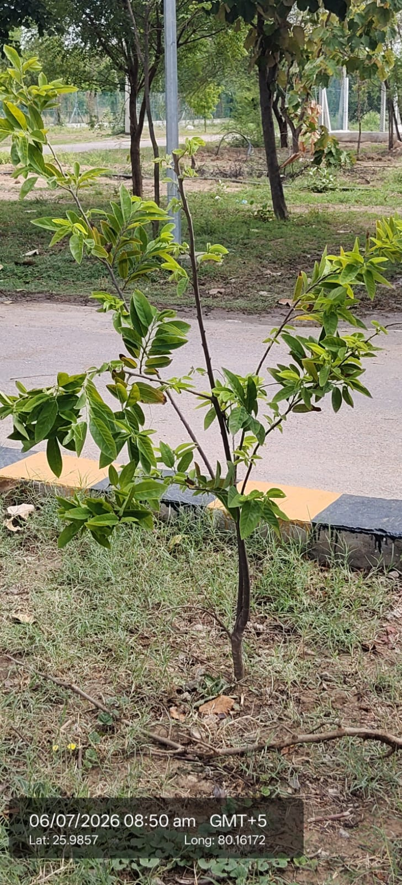

| Scientific name | Annona squamosa |
|---|---|
| Family | Annonaceae |
| Category | Trees |
Habitat & Growing Conditions
- Native to tropical Americas. Widely cultivated in India
- Very common in UP including Kanpur area at your coordinates. Found in home gardens, orchards, and along roadsides like in your photo
- Thrives in tropical to subtropical climate. Drought tolerant
- Grows in well-drained soil. Needs full sun
- Small deciduous tree, 3-6 m tall. Leaves are alternate, simple, oblong-lance shaped, glossy green with prominent veins and slightly hairy underside, like in your photo
Ecological & Economic Importance
- Food: Fruit is highly nutritious and sweet. Eaten fresh or used in milkshakes, ice creams, and desserts. Rich in Vitamin C, fiber, and antioxidants
- Medicinal: Leaves, bark, and seeds used in traditional medicine for digestive issues, skin diseases, and as an insecticide. Leaf extract has antimicrobial properties. Note: Consult a healthcare professional before any medicinal use. Seeds are toxic if ingested
- Other uses: Seed oil used in hair oils and as a natural insecticide/pesticide. Wood used for small implements
- Agricultural: Easy to grow, gives fruit in 3-4 years. Good for dryland horticulture